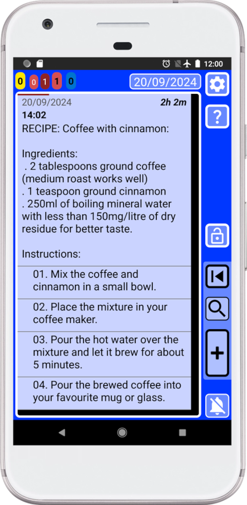
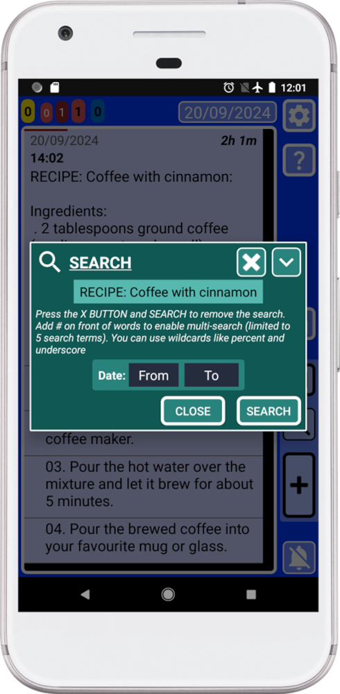
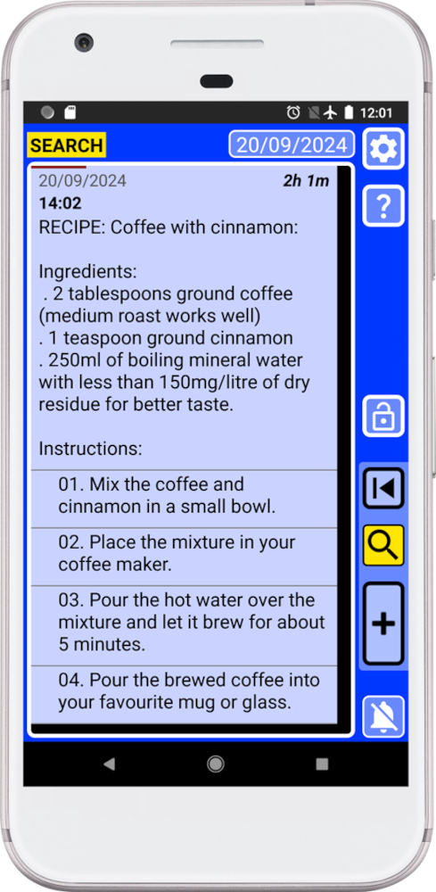
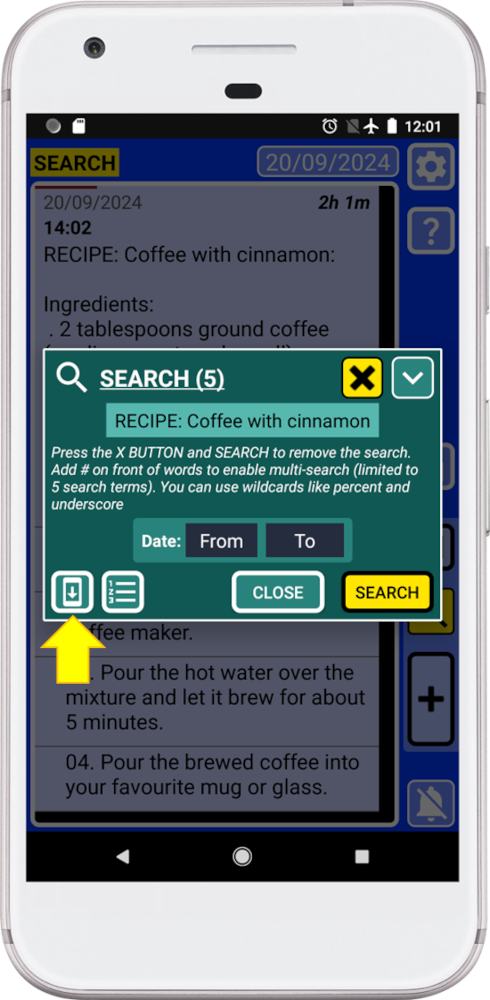
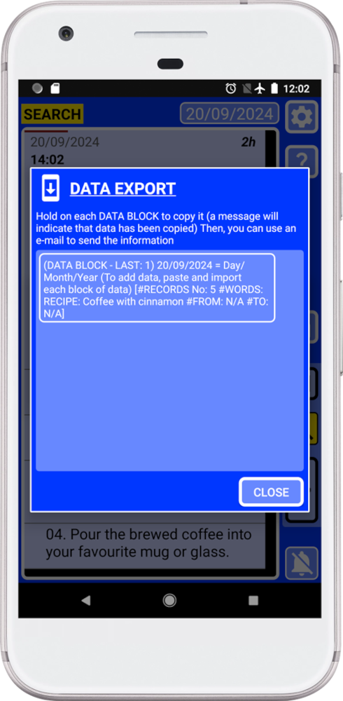
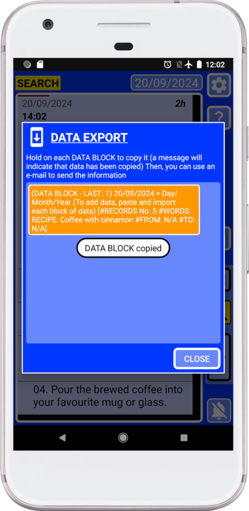
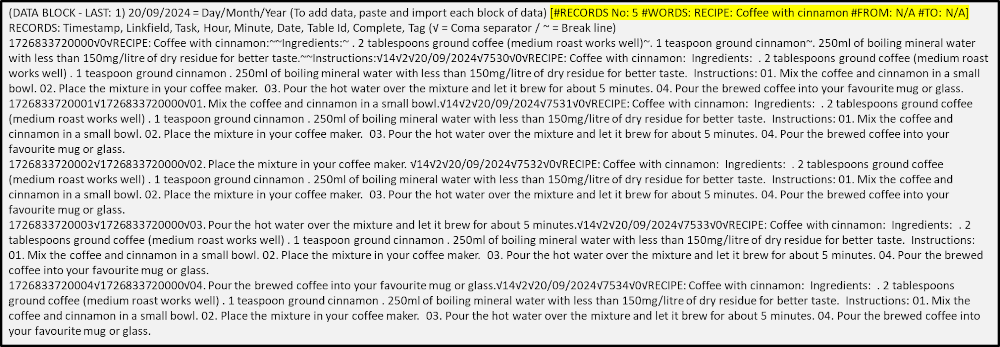

⏮
13. Export specific records to share them
This manual will show you how to use the
search system to export specific records to share them.
This will allow to find specific records and copy them as text. Then you will be able to share the information with other SECURElogBook users.
Let’s say you want to send your coffee with cinnamon recipe to your friend.

Notice that we labeled our record using the word “RECIPE”, in front. If we label all recipes with the same word, we can search for “RECIPE” to only show all recipes. Labeling records, will make easier to find things when we will have thousands of records.
You can use the
search system to select what you want to send to your friend. In this case we want to send to our friend our recipe for coffee with cinnamon.
1. Open the
search system by pressing in the main window (blue) and write something that is only present in the record/s that we are looking for, in this case “RECIPE: Coffee with cinnamon”:

Because we are using the
search system to select what we want, you can use the flexibility of the
search system to find exactly what you want.
2. Press “SEARCH”.
Now SECURElogBook will only show the search results:

3. Open the
search system again by pressing

Now, because there are search results, the
search system will show two extra buttons on the bottom left corner.
4. Press the bottom left button, indicated with a yellow arrow in the picture above, to open the “DATA EXPORT” window.

This window will generate blocks of data, text information, that you can copy and paste. The more information your search result will have the more blocks of data will be created.
5. Hold on the data block to copy it.

Remember that if you close the “DATA EXPORT” window, the information will be removed from the clip board to do not allow other apps to access to your information.
6. Paste the information in the instant messaging app or email app to share the information with your friend.

You can also share the information without internet, using USB drive, USB memory or SD card.
Remember that you can protect your information. 7-Zip is a free and open-source file archiver for Windows. You can use it to password/encrypt protect your information.
Now your friend will be able to import the information to the application to create a record with the cinnamon coffee recipe.
If you are following a diet, you will be able to share with your doctor the records of what you eat and drink. If you are checking your weight, you will be able to add those records too.
You can use this feature to share anything you already have: recipes, shopping lists, manuals, workouts, diet, …
But you can also you can create records in someone else behalf:
. If you are a parent, you can create a schedule to help your kid handle time better.
. You can create records to schedule the medication intake for and older person so they do not forget to take the medication.
. In a small company, people will be able to share tasks with their work colleagues.
SECURElogBook is not another Todo list, SECURElogBook is a SAFE FLEXIBLE TOOL that you can use to make your life easier and better, inside and outside work!